What Haircut Should I Get?
If you’ve ever wondered what hairstyles suit you and how you should cut your hair, here’s a list of the coolest styles to get in 2021. We’ve broken down the different hairstyles for men according to face shape – oval, long, round, square, diamond, and triangle. If you catch yourself asking “what kind of haircut should I get?”, check out the best men’s hairstyles below to help you choose the right haircut.
Best Haircuts For Men By Face Shape
Because your head shape can influence how different cuts and styles looks on you, it only makes sense to know what face shapes and hairstyles are compatible. For example, because of their facial features and dimensions, what haircut an oval or long face man should get is obviously different than the best hairstyle for a round face man. This is why categorizing guy’s haircuts according to head shape is one of the most logical ways of ensuring you get a good cut at the barbershop.
Below, we’ve described each of the different men’s face shapes as well as provided examples and pictures of popular styles. From the quiff, pompadour, slick back, textured crop, and faux hawk on top to the types of fades and undercuts on the sides, here are the best haircuts for men by face shape.
Hairstyles for Oval Face Shape
There are many stylish hairstyles for oval faces. The defining feature of an oval face shape is the absence of sharp angles or corners near the forehead, cheeks and chin. Because of their symmetry and balance, most hairstyles look great on oval faces, including fades and undercuts with comb overs, quiffs, pompadours, textured slick backs, and spiky hair. However, avoid fringes and bangs that could cover your forehead and make your face appear rounder.
Facial hair and beards are optional for guys with oval faces. Because of the soft, smooth contours of the jawline, go clean-shaven.
Brush Back
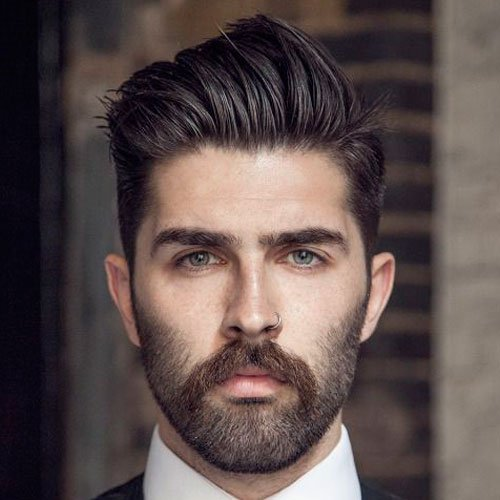Undercut with Comb Over
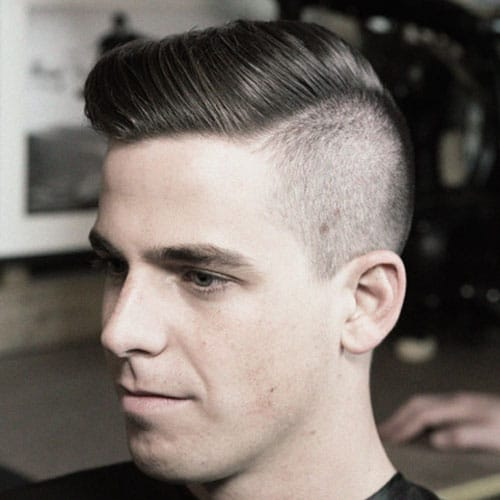Mid Fade with Pompadour
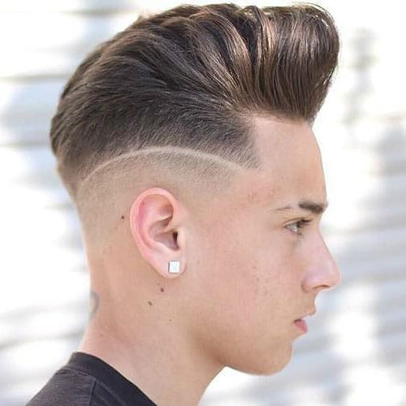Taper Fade with Quiff
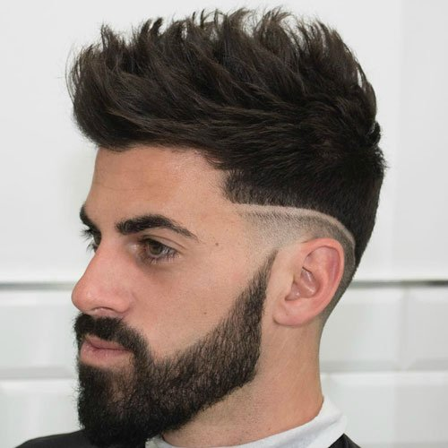Hairstyles for Round Face Shape
There are also a variety of cool hairstyles for round face shapes. Round faces are about equal in length and width, and the jawline offers no sharp corners or defining edges. To create the illusion that the face is longer, consider hairstyles that are short on the sides but add height or volume.
The best hairstyles for round faces include undercuts and high fades coupled with pompadours, faux hawks (fohawks), fringes, side parts, quiffs, spiky hair, and long textured comb overs or slick backs.
While a beard isn’t needed for round-faced men, a full square beard can give the jaw a more chiseled look.
Bald Fade with Slick Back
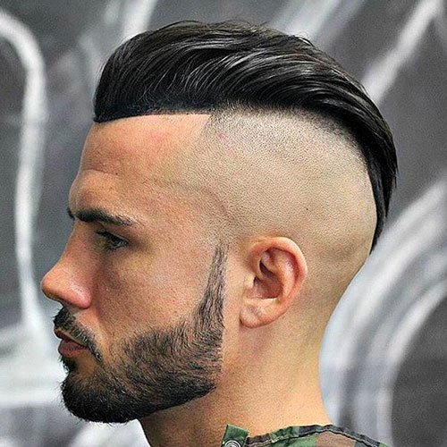High Skin Fade with Pompadour
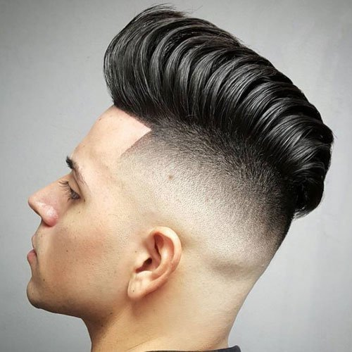Side Swept Brush Up
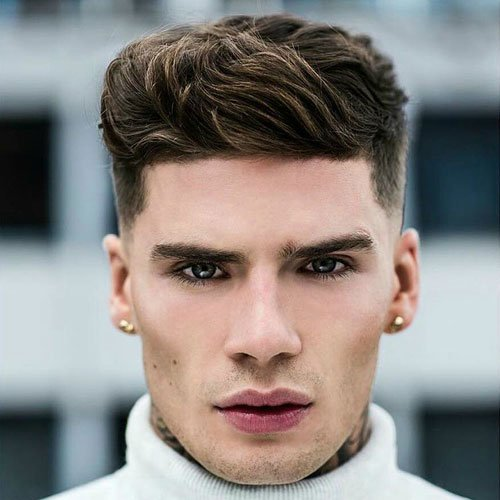Spiky Hair
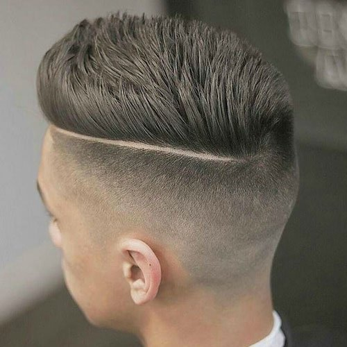Hairstyles for Square Face Shape
The best hairstyles for square face shapes tend to be short and manly. Square faces are angular, sharp and masculine. Like round face shapes, square faces mean the length and width measurements are similar – the only difference is the angle of the jaw is sharper.
Because of its versatility, the best haircuts for square faces range from really short men’s haircuts, such as undercuts, buzz cuts or crew cuts, to longer styles that add some volume to the top, such as brush ups, quiffs, pomps, messy crops, long comb overs and traditional slick backs.
Men with square faces may grow some light stubble to soften the sharpness of the chin and jawline.
Buzz Cut
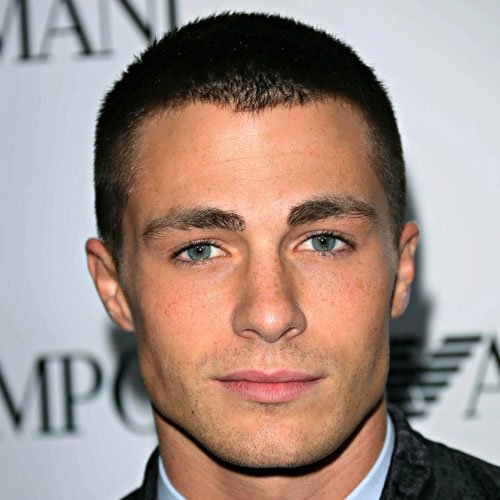High Fade with Quiff
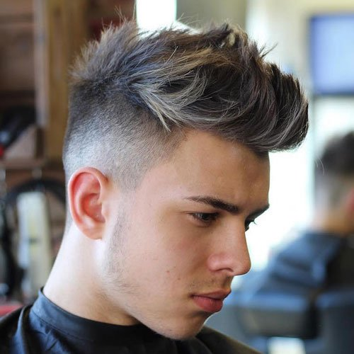Crew Cut
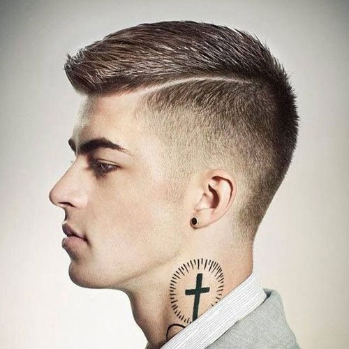Textured Comb Over
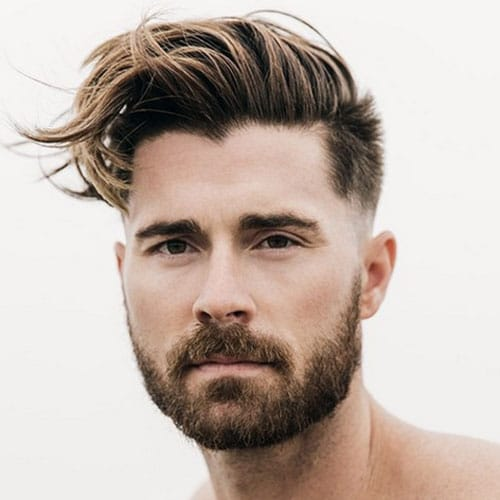Hairstyles for Long Face Shape
The best hairstyles for long face shapes generally help even out the dimensions of the head. Sometimes called “oblong” or “rectangular”, long faces are longer than they are wide. To avoid your face looking even longer, men with oblong faces should try short haircuts on top, such as a crew or buzz cuts. However, if you want more volume on top, skip the short fade on the sides and you can style your hair with a side part, comb over, or short brush up/spiky hair.
Guys with oblong faces also shouldn’t grow out a beard that will further elongate the face’s shape.
Brush Up
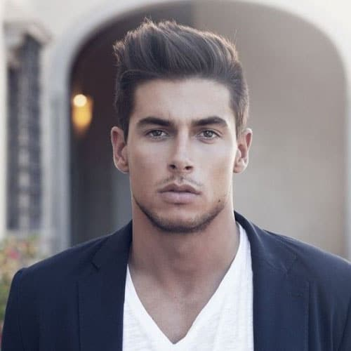Side Part
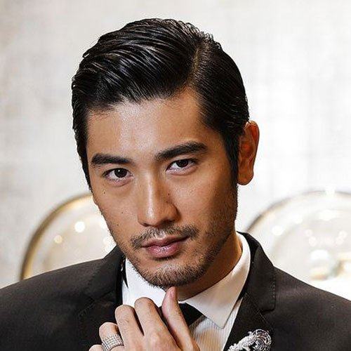Side Swept Crew Cut
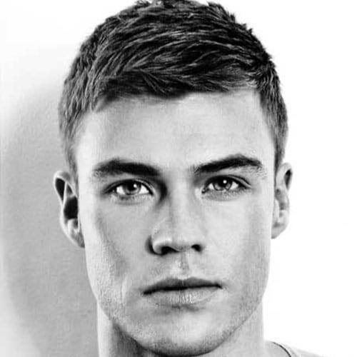Short Spiky Hair
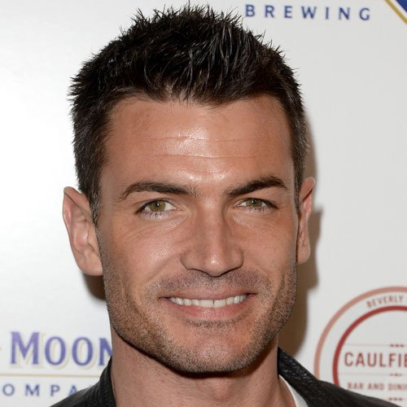Hairstyles for Diamond Face Shape
The top hairstyles for diamond faces are actually some of the hottest cuts and styles trending today. A diamond face shape is characterized by strong, wide cheekbones and a defined, angular chin. Because diamond-shaped faces are typically long and narrow, barbers and stylists recommend a layered, high-volume hairstyle, such as a fringe, faux hawk (fohawk), brush up, side sweep, shag, long slick back, or textured crop.
Men with diamond faces may consider growing some facial hair to soften the chin and jaw.
Textured Crop
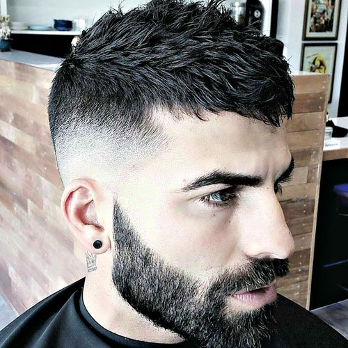Faux Hawk (Fohawk)
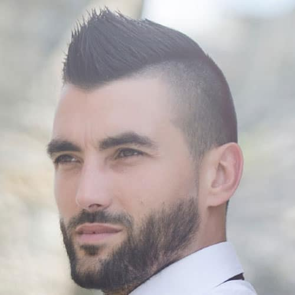High Fade with Fringe
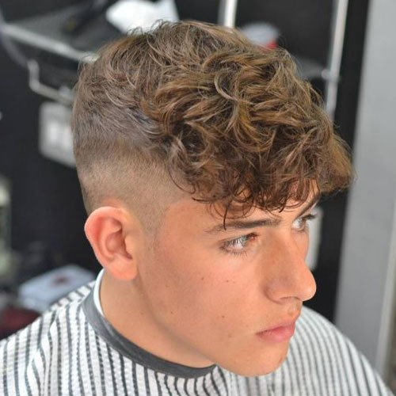Slick Back
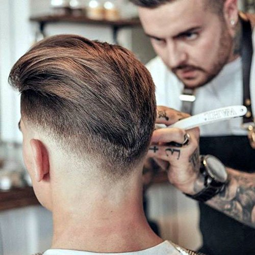Hairstyles for Triangle Face Shape
Trendy hairstyles for triangle faces tend to be longer and layered. Triangular face shapes accentuate angular features, most notably with the jawline being wider than the cheekbones. To offset the smaller forehead and create symmetry, the ideal haircut for guys with triangle face shapes is to avoid short fades on the sides and try medium-length textured hairstyles on top, such as swept bangs, angular fringes, and messy hair.
Given the prominence of the jawline, most men would do best clean-shaven.
Comb Over
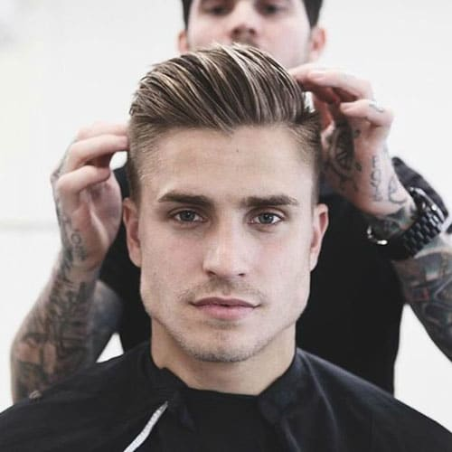Crew Cut
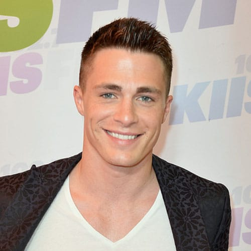Textured Quiff
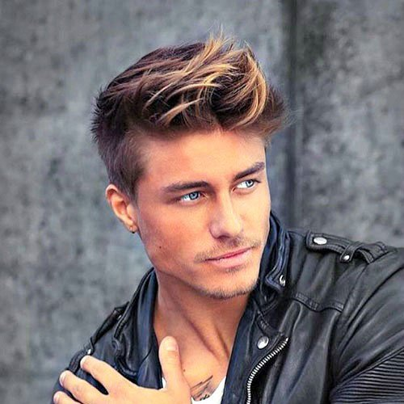Mid Fade with Angular Fringe
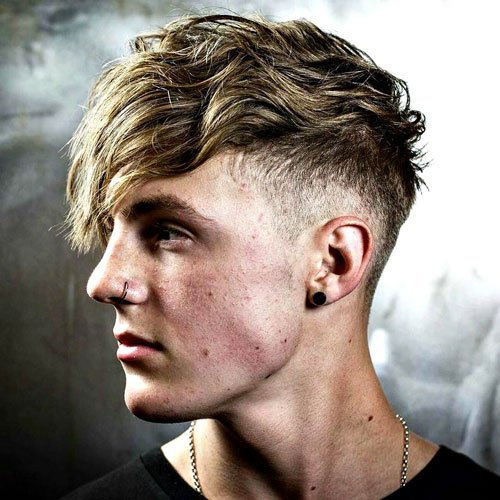Best Haircuts For Your Face Shape
If you’re at the barbershop and need a quick guide to the best haircuts for your face shape, here’s a simple overview of our recommendations. While these are generally the best men’s hairstyles by head shape, all guys are different and some can pull off a variety of cuts and styles that others can’t.
Here’s a few of the coolest haircuts to get according to face shape:
Round: pompadour, faux hawk, fringe, side part, quiff, and spiky hair with high fade or undercut
Square: buzz cut, crew cut, brush up, quiff, pomp, messy crop, and long comb over with fade or undercut
Oval: comb over, quiff, texture slick back, spiked hair, and Ivy League with skin fade, shaved sides, or undercut
Long: crew cut, buzz cut, short side part, comb over, short brush, and textured crop with tapered sides or low fade
Diamond: fringe, faux hawk, brush up, side sweep, messy top, long slicked back hair, and textured crop with short sides
Triangle: short to medium length hair on top with tapered sides or undercut